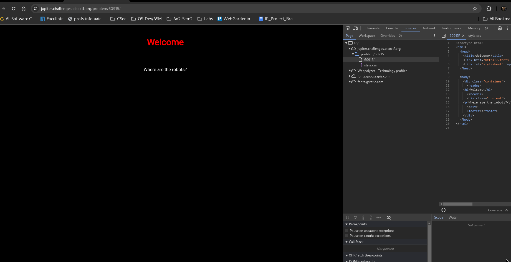
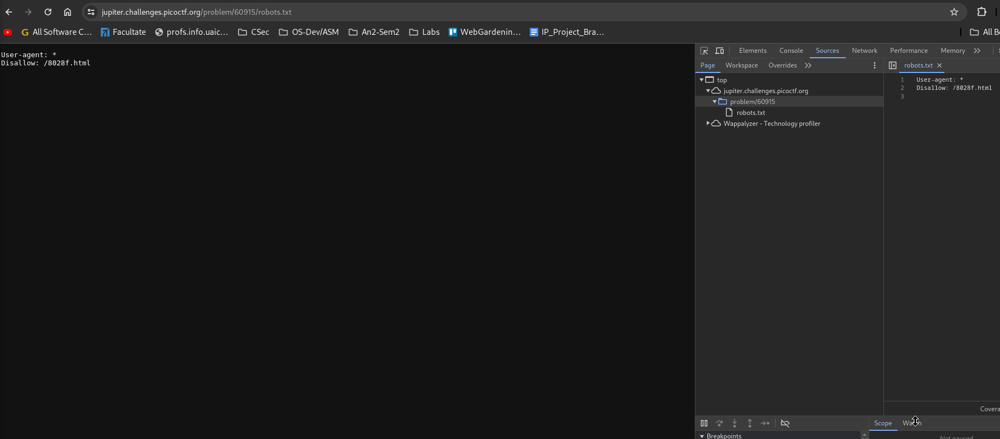
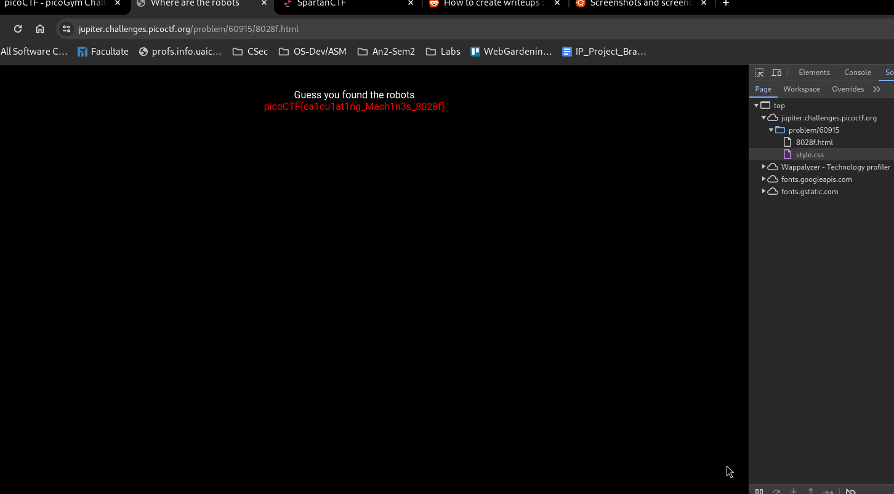

Description
Can you find the robots? https://jupiter.challenges.picoctf.org/problem/60915/ (link) or http://jupiter.challenges.picoctf.org:60915
The name of the CTF suggests I should look for robots.txt file(common file for apache). 
On the robots.txt file I find this. 
So I ll check that page out.
 On that page we find the flag.
Flag : picoCTF{ca1cu1at1ng_Mach1n3s_8028f}